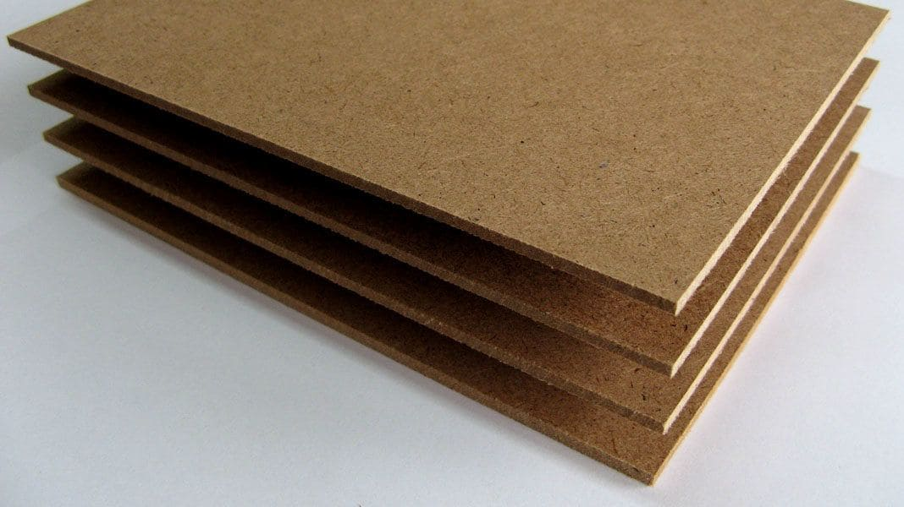
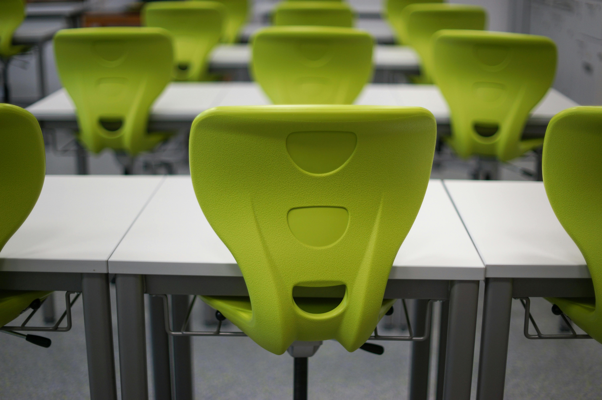

Materiales: Madera, MDF y Plástico – ¿Qué es Mejor?
Análisis comparativo de los materiales más populares para mobiliario y construcción
Madera Natural
Madera Natural
La madera es un material tradicional con características únicas que la han convertido en la opción preferida para muebles de alta calidad y construcciones duraderas.
Características:
- Durabilidad excepcional
- Aspecto estético superior
- Material renovable
- Aislante térmico natural
- Requiere mantenimiento
- Precio más elevado
- Sensible a la humedad
- Puede deformarse

MDF
Tablero de Fibra de Densidad Media
El MDF es una alternativa moderna a la madera natural, fabricada a partir de fibras de madera comprimidas, ideal para muebles y acabados interiores.
Características:
- Precio accesible
- Superficie uniforme
- Fácil de trabajar
- Múltiples espesores
- Menor durabilidad
- Sensible al agua
- Difícil de reparar
- Peso considerable

Plástico
Plástico
El plástico ofrece versatilidad y practicidad, siendo una opción popular para muebles económicos y productos que requieren resistencia a la humedad.
Características:
- Resistente al agua
- Ligero y práctico
- Bajo mantenimiento
- Múltiples colores
- Precio económico
- Menor durabilidad
- Impacto ambiental
- Sensible al calor

Comparación
¿Cuál Elegir?
La elección del material dependerá de varios factores específicos de tu proyecto. Considera estos aspectos clave para tomar la mejor decisión.
Factores a Considerar:
- Presupuesto disponible
- Uso previsto
- Condiciones ambientales
- Requisitos estéticos
- Durabilidad necesaria
- Facilidad de mantenimiento
- Impacto ambiental
- Peso y movilidad